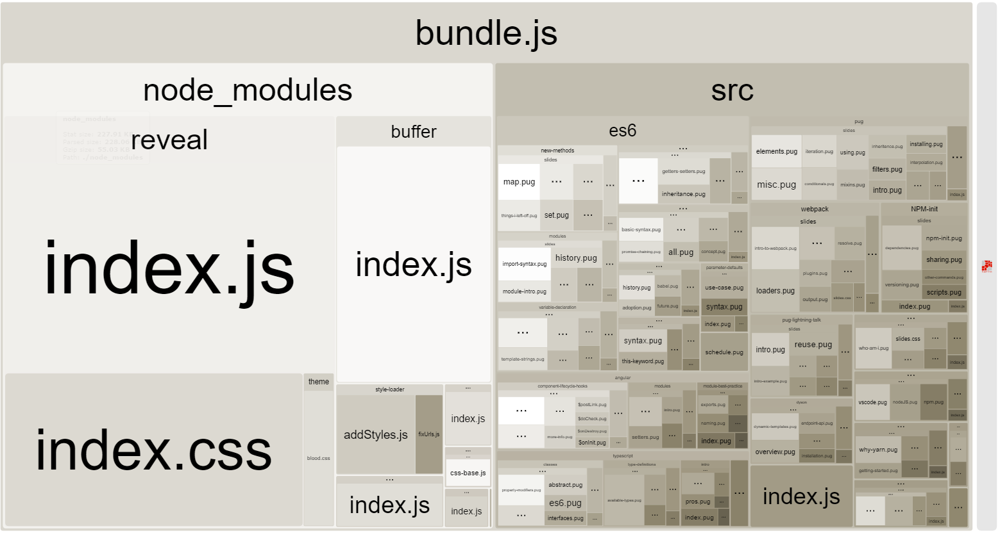

前言
一直以来都想写一篇ReactNative性能优化的博客，原因很简单，技术知识要落地才有价值，而性能优化是业务开发中的一个非常重要的点，但想了一年多了都还没写，是因为这个选题太大了，在google上一搜，讲RN性能优化的文章有不少，但都没有讲的很全面，有的又偏细节，没有提炼出底层的原理，比如props不要用局部变量和立即执行函数，只是代码层面的执行策略，底层真正的原因实际上重复渲染机制。
今天突然想到，与其寄希望于一口气写出一篇集ReactNative性能优化之大成的文章来，不如想到多少写多少，先写了再说，这才是正确的做事方式，所以先来个最简单的开篇吧。
包体积
所谓包，就是我们在执行react-native bundle命令生成的产物的统称，例如
1 | react-native bundle --entry-file ./index.js --platform ios --dev false --bundle-output ./dist/index.ios.bundle --assets-dest ./dist |
就会在dist目录下生成一个index.ios.bundle文件，以及图片资源也放在dist目录下，这样我们可以把dist目录打一个压缩包，预置在安装包内，或者拿去下发做热更新。
为什么要优化包体积？首先它会影响到安装包的体积，尤其是预置的情况，安装包体积过大，会影响用户下载应用的体验，各大APP也都在想办法压缩安装包的体积，其次是会影响加载效率，ReactNative需要加载bundle才能运行起来，bundle体积越大，则加载越慢，体验也就更加不好，而如果图片资源体积过大，则影响运行时的图片加载效率，也会影响体验
既然包是由bundle和资源两大块组成的，我们就分别给出它们的优化策略。
图片压缩
资源有很多种，例如图片，音频，视频等，但图片是最普遍的一种，所以我们就只介绍图片压缩。
图片压缩首先有一个非常简单的方案：使用JPEG格式。如果一张图片没有透明度的需要，那么就改成使用jpeg格式，体积比png体积要小很多。
其次是png图片的压缩，业界有非常多也非常成熟的方案可以选择，如果图片数量不多又想省事，可以直接使用tinypng.com，它也对外开放了API可供脚本调用，但每个月只能免费压缩500张。如果更专业一些，可以使用pngquant，它功能更加强大，可以自定义压缩系数，避免压缩系数过大导致失真，或者压缩系数过小导致压缩率不高，它可以下载工具，或者使用命令行调用。
使用工具对png图片进行有损压缩，根据不同图片具体情况，压缩比一般能在20%-60%左右，是效果非常显著的。
bundle压缩
bundle其实是纯js代码，它包含了ReactNative的JavaScript层源码，第三方库，我们自己的业务代码，要优化它的体积，首先我们需要知道bundle里哪些东西占了多少体积，然后再去针对他们做优化，有一个工具叫react-native-bundle-visualizer，使用它可以看到bundle内的详细情况，它的底层是使用了
source-map-explorer，所以我们用source-map-explorer也可以。或者如果我们使用了webpack打包，那么可以使用webpack-bundle-analyzer插件。
下面是一张网上找到的示例图：

知道bundle里什么东西占地方的话，就想办法去优化，例如很典型的是moment.js，很多时候我们发现它的locate占了很大一块，实际上又没用到，那我们可以参考how-to-optimize-momentjs-with-webpack，或者简单点直接使用moment.min.js不要locate功能，或者换成其它的替代库。例如lodash，我们只使用了它的几个方法，却引入了一整个库，我们就可以想办法使用局部引用的写法。其次就是如果使用的多个第三方库依赖了同一个库的不同版本，导致了存在同一个库的多份代码，则可以考虑升级其中的一些库来避免这种情况。最后是咱们自己业务的代码，要避免机械的拷贝粘贴，否则同样的代码在bundle里存在多份，就导致了bundle体积的增加。
分包
将bundle拆分成基础包和业务包，也是减少包体积的一个有效方案，但实现起来稍微复杂一些，需要改动ReactNative的源码，修改加载流程，对团队的技术能力有一定要求，但也不用担心，技术方案早就已经很成熟，我在两年前就写过相关的介绍可供参考。因为说起来话题就比较大，暂时不做展开了。
总结
新开了个大坑，这是第一篇，如果能够按照上面的做法，将安装包体积减少，就迈开了性能优化的第一步，这一步虽然不难，但效果会非常显著，如果还没做，不妨立即试一下。
希望这个ReactNative性能优化系列能填完，也希望整理的东西对大家有实际的帮助，有任何问题，欢迎随时沟通~